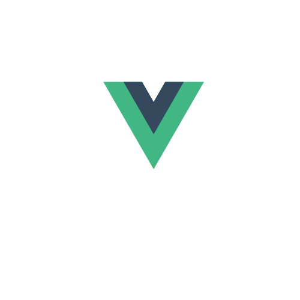

À propos de moi
À l'heure où j'écris cette petite présentation, j'aurai 30 ans depuis 5 ans dans 2 jours....
Maman de 2 merveilleuses filles, j'ai entamé en 2021 une reconversion dans le développement web. Et pourquoi donc me direz-vous ? Et pourquoi pas vous répondrai-je ! J'ai eu envie de trouver un métier dans lequel je me sente utile, où je peux exprimer ma (petite) créativité et voir l'envers du décor du web ! Je souhaitais également un métier qui puisse me permettre de travailler n'importe où, pourquoi pas devenir digital nomade plus tard... nous verrons si l'opportunité se créée. Je me suis donc tournée vers Openclassrooms pour réussir ce virage professionnel. Savez-vous la détermination, l'adaptabilité et l'autonomie dont il faut faire preuve pour réussir ce genre de formation 100% à distance? Ba moi je sais, j'ai connu 9 mois de montagnes russes mais au final j'ai réussi (joie) !
Alors oui j'ai encore énormément de choses à apprendre, mais c'est le métier aussi qui veut ça, et il me semble avoir prouvé que je suis capable d'emmagasiner beaucoup d'informations en peu de temps. Ah, et j'aimerais ajouter la rédaction web à mon arc, j'ai déjà écrit quelques descriptifs sur des plateformes spécialisées, alors je vais aussi prendre le temps de me former à ce chouette métier !
En dehors du travail j'aime passer du temps avec mes enfants, voyager, les tatouages, le foot et l'Italie !
Maintenant que vous en savez un peu plus sur moi et pu découvrir que je suis bavarde, j'espère que nous aurons l'occasion de travailler ensemble !
Formations
2021 - 2022
Développeuse web - Openclassrooms
Cette formation s'articule autour de 7 projets professionnalisants :
Faites passer le site web de votre entreprise en tête des résultats Google grâce à la mise en place de bonnes pratiques de SEO.
Intégrez de manière dynamique les maquettes d'un site avec JavaScript. Vous utiliserez l’API pour récupérer les produits et leurs détails, et vous gérerez l’ajout des produits au panier.
Créez le backend et l'API d'une application. Utilisez les technologies Node.js, Express et MongoDB pour construire la BDD NoSQL. Sécurisez les données grâce aux normes de l'OWASP.
Mes stacks


- 


My Blogs

Reservia
Projet n°2 de ma formation de développeuse web chez OpenClassrooms.
L'objectif de ce projet est d'implémenter la maquette d'un site de réservation de vacances en HTML et CSS. Les maquettes en version mobile et desktop sont fournies, ainsi que les images, la font et les couleurs à utiliser. Un cahier des charges est également donné.

Ohmyfood
Projet n°3 de ma formation de développeuse web chez OpenClassrooms.
L'objectif de ce projet est de développer un site proposant le menu de 4 grands restaurants parisiens. Des animations et des effets graphiques sont attendus. Les maquettes sont fournies.

La chouette agence
Projet n°4 de ma formation de développeuse web chez OpenClassrooms.
L'objectif de ce projet est d'optimiser un site web existant en écrivant un code HTML et CSS maintenable, en assurant l'accessibilité, en optimisant la taille, la vitesse et le référencement du site.

Kanap
Projet n°5 de ma formation de développeuse web chez OpenClassrooms.
L'objectif de ce projet est de construire un site de e-commerce en JavaScript pur. Il s'agit ici d'interagir avec un web service en JavaScript, valider des données issues de sources externes, de créer un plan de test pour une application et de gérer des évènements JavaScript.

Piiquante
Projet n°6 de ma formation de développeuse web chez OpenClassrooms.
Piiquante se dédie à la création de sauces épicées dont les recettes sont gardées secrètes. L'objectif de ce projet est de créer une application web dans laquelle les utilisateurs peuvent ajouter leurs sauces préférées et liker ou disliker les sauces ajoutées par les autres utilisateurs.

Groupomania
Projet n°7 de ma formation de développeuse web chez OpenClassrooms.
L'objectif de ce projet est de créer un réseau social d'entreprise. La liberté est donnée quant au choix des technos et de la charte graphique. La création d'un admin est attendue. Les utilisateurs doivent pouvoir s'identifier ou créer un compte, supprimer leur compte, créer et modifier un post.
Mes réalisations

Reservia
Projet n°2 de ma formation de développeuse web chez OpenClassrooms.
L'objectif de ce projet est d'implémenter la maquette d'un site de réservation de vacances en HTML et CSS. Les maquettes en version mobile et desktop sont fournies, ainsi que les images, la font et les couleurs à utiliser. Un cahier des charges est également donné.


Ohmyfood
Projet n°3 de ma formation de développeuse web chez OpenClassrooms.
L'objectif de ce projet est de développer un site proposant le menu de 4 grands restaurants parisiens. Des animations et des effets graphiques sont attendus. Les maquettes sont fournies.

La chouette agence
Projet n°4 de ma formation de développeuse web chez OpenClassrooms.
L'objectif de ce projet est d'optimiser un site web existant en écrivant un code HTML et CSS maintenable, en assurant l'accessibilité, en optimisant la taille, la vitesse et le référencement du site.

Kanap
Projet n°5 de ma formation de développeuse web chez OpenClassrooms.
L'objectif de ce projet est de construire un site de e-commerce en JavaScript pur. Il s'agit ici d'interagir avec un web service en JavaScript, valider des données issues de sources externes, de créer un plan de test pour une application et de gérer des évènements JavaScript.
Piiquante
Projet n°6 de ma formation de développeuse web chez OpenClassrooms.
Piiquante se dédie à la création de sauces épicées dont les recettes sont gardées secrètes. L'objectif de ce projet est de créer une application web dans laquelle les utilisateurs peuvent ajouter leurs sauces préférées et liker ou disliker les sauces ajoutées par les autres utilisateurs.


Groupomania
Projet n°7 de ma formation de développeuse web chez OpenClassrooms.
L'objectif de ce projet est de créer un réseau social d'entreprise. La liberté est donnée quant au choix des technos et de la charte graphique. La création d'un admin est attendue. Les utilisateurs doivent pouvoir s'identifier ou créer un compte, supprimer leur compte, créer et modifier un post.
Contactez-moi !
On discute ?
Vous avez un projet? Des questions? N'hésitez pas à me contacter pour en discuter ! Vous pouvez également me contacter et me suivre sur LinkedIn !